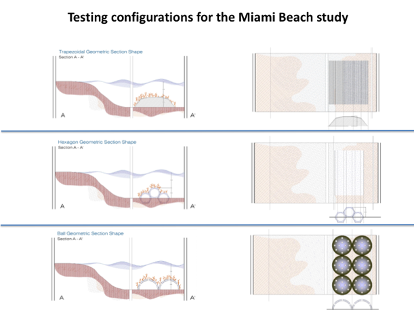
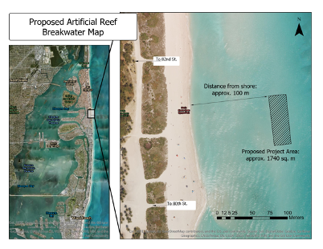
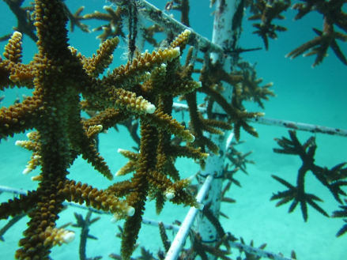
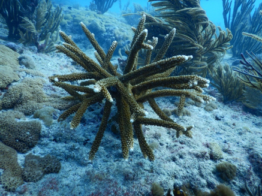

Pilot Deployment of AR Models
While our measurements in the laboratory are useful to predict the types of benefits we might see in the real world, we also need to make sure that our hybrid reef breakwater designs are practical and effective in the real world.
To make this assessment, we plan to field deploy offshore northern Miami Beach a set of hybrid structures consisting of three differently shaped gray components with restoration corals added to the surface. We are currently working towards this goal.
This deployment will not only provide insight on how much a coastline can be protected by a hybrid reef, but may also create habitat for fish, attract divers and snorkelers, enhance biodiversity, and stabilize sediment nearshore. All these and more will be rigorously monitored by our research team.
Stable and simple to build, the trapezoidal shape lends itself to a submerged breakwater. The trapezoid will be perforated to allow fish and other organisms to swim through.
A novel design created by engineers, these hollow hexagonal units are stackable and perforated.
Limestone boulders of various shapes and sizes are widely used as submerged breakwaters to protect shorelines.
Once hybrid structures using each of these designs are manufactured to scale, they will be deployed at approximately 100 m from the shoreline of Miami Beach, populated with restoration corals, and tested for up to two years on the measures outlined above, primarily protection of the shorelines from waves but also ecological benefits.
 To assess how waves are affected by the hybrid reef breakwater we deploy off Miami Beach, we will use a variety instruments to measure water and wave movement. For wave height at the surface, we will use Spoondrift Spotter buoys that are capable of creating 3d data simulations to characterize the sea conditions, including wave height.
We also plan to deploy MAT (Magnetometer-Accelerometer-Temperature) data loggers in the sand on the oceanward and shoreward side of our structures to look at the hydrodynamic motion throughout the water column as well as to get additional data on surface waves.
For our project to be considered a success, the live corals that are attached to the structures must also thrive. Healthy coral stock will not only improve the ability of the hybrid reef breakwater to reduce wave energy by increasing friction on the structure’s surface, but also provide critical habitat for fish and other reef organisms, and will be a splendid sight for snorkelers along the shoreline. We plan to monitor the growth rates and percent survivorship of the corals that we attach to our structures.
Coral
Coral